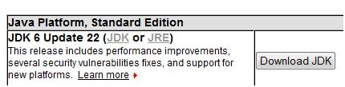

Antwort:
Nur bei Starbucks. (Eine in den USA bekannte Kette von Kaffeehäusern, die Java-Kaffee verkauft.)
Nur bei Starbucks. (Eine in den USA bekannte Kette von Kaffeehäusern, die Java-Kaffee verkauft.)
Wenn Sie bereits eine Version von Java 5 auf Ihrem Computer installiert haben, dann ist das OK und Sie brauchen nichts tun. Wenn Sie Java zum ersten Mal installieren, installieren Sie Java 2 Standard Edition Version 6.0 oder höher.
Um mit der aktuellen Version von Java arbeiten zu können, brauchen Sie einen Computer mit:
Sie sollten auch auf Ihrer Festplatte 250 Megabyte zur Verfügung haben. Bei Apple und einigen Linux Computern ist Java vorinstalliert. Sie brauchen nicht die neueste Version, aber Sie brauchen für diese Aufzeichnungen Java 5.0 oder höher.
Die Screenshots der deutschen Übersetzung wurden mit Windows Vista und der Version 1.6.18 von Java gemacht, aber die Screenshots sind für alle Windows Betriebssysteme typisch. Wenn Sie ein anderes Betriebssystem haben, wird es kleinere Unterschiede geben wie Programme erzeugt und gestartet werden. Aber es gibt absolut keinen Unterschied bei der Sprache Java selbst.
Das Java Software Development Kit (SDK) wurde von Sun Microsystems, Inc. entwickelt. Im Januar 2010 wurde Java von Oracle übernommen. Sie können das SDK kostenlos bei Oracle herunterladen.
 Wenn Sie Java noch nicht installiert haben, besorgen Sie sich die neueste Version bei Oracle. Sie finden das aktuelle SDK unter der Rubrik Java Platform, Standard Edition. Klicken Sie auf den Button Download JDK. Hier geht es zur Downloadseite von oracle.com.
Der Dateiname der aktuellen SDK Version 6 für Windows ist
jdk-6uxx-windows-i586-p.exe
Sobald Sie die Datei haben können Sie Java installieren, indem Sie diese Datei (doppelt) anklicken. Damit starten Sie das Installationsprogramm. Alles, was Sie dann noch zu tun haben ist auf die Schaltflächen zu klicken und die Standardeinstellungen zu akzeptieren.
Wenn die Installation gelungen ist, dann sollten Sie jetzt ein neues Unterverzeichnis auf dem Laufwerk C: mit dem Namen C:\Programme\Java\jdk1.6.0_21 (oder ähnlich) haben. (Bei den folgenden Abbildungen wurde eine etwas ältere Version von Java verwendet.)
Möchten Sie die Installation testen?